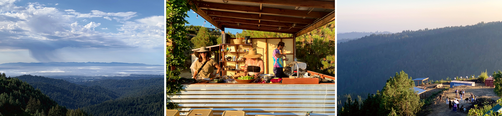
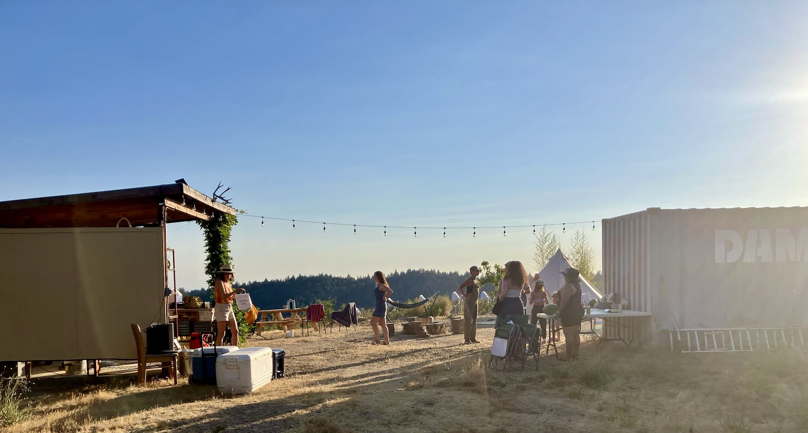
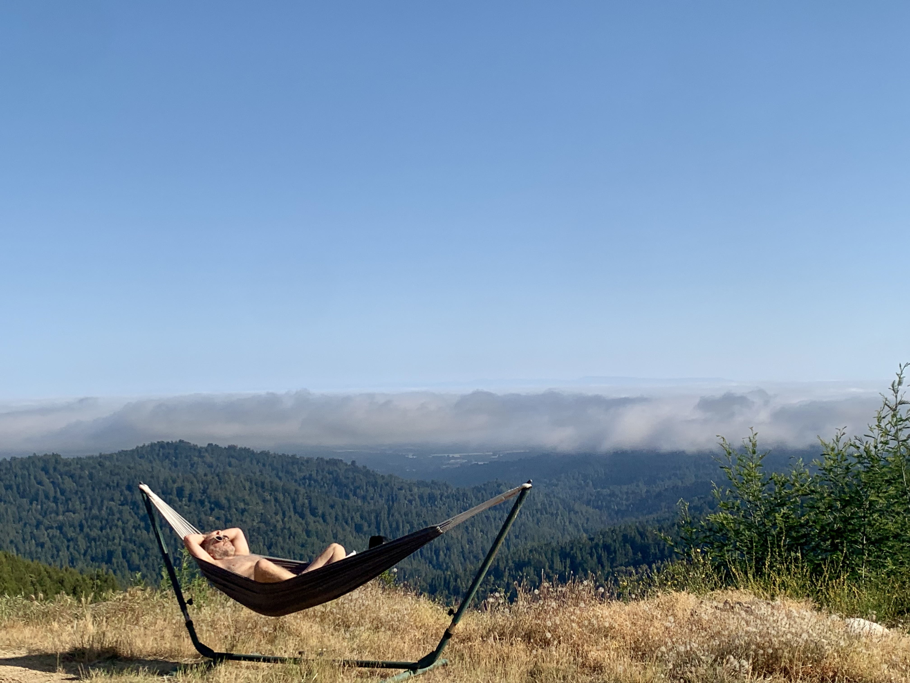
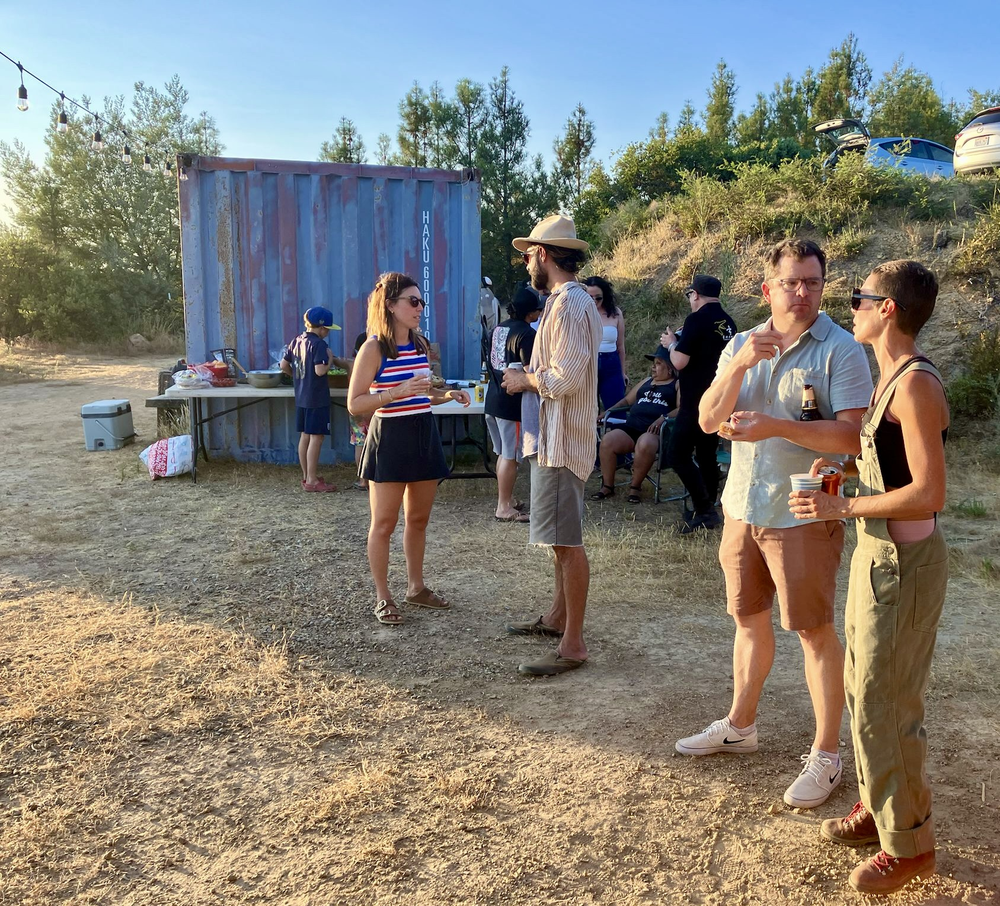
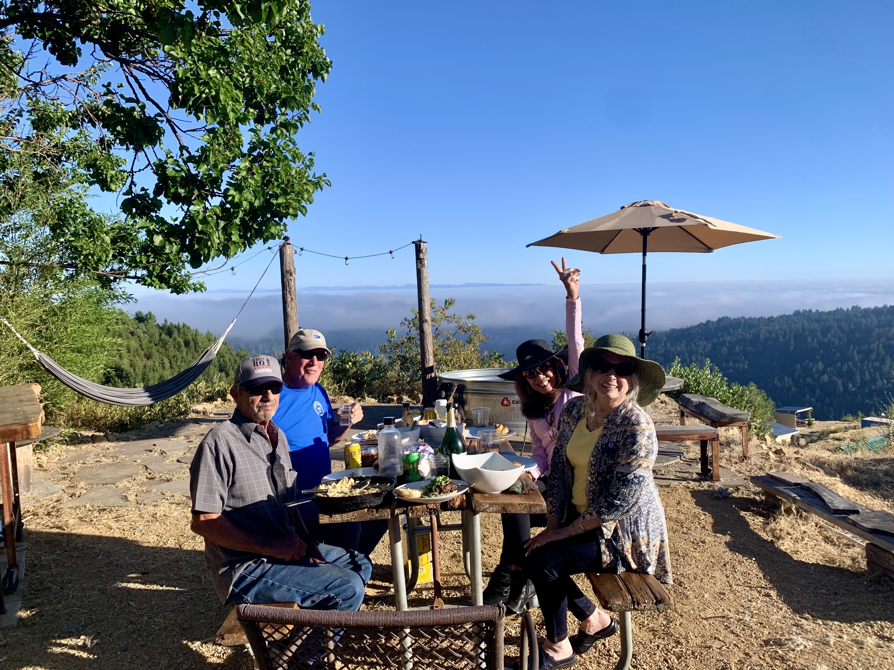
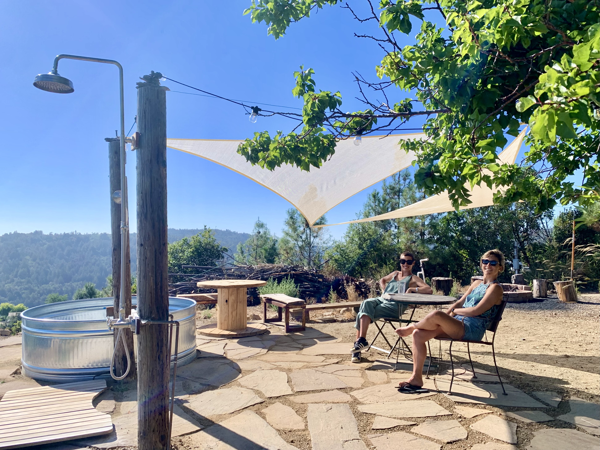
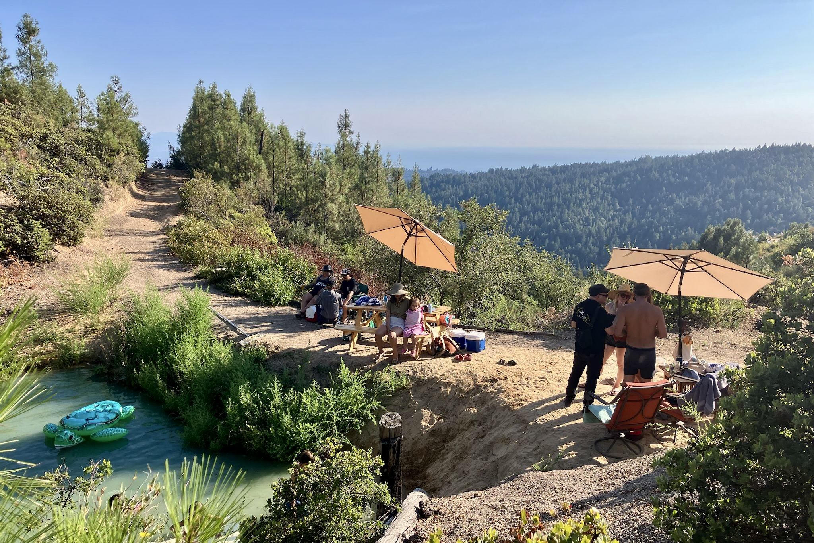

Charcoal Springs Philosophy Retreat

Slow down. Look around. Think together.
- The Charcoal Springs Retreats invite participants into a shared outdoor space of reflection, creativity, and pause from the overwhelming flood of information, the noisy pressure of urban living, and the constant distractions of digital life.
- Because philosophical inquiry can deepen our relationship with nature, other people, and ourselves, our aim is to recover slower practices of asking questions, reflecting together, while engaging with art and nature.
- The retreat emphasizes attentiveness and thoughtful conversation in an atmosphere of simplicity, making lasting connections with a community of peers while walking in the forest or on the ridge, camping under the stars, and gathering for meals.
- Camping on-site — $250 per person
Bring your own tent and complete sleeping gear. Set up anywhere on the property’s designated camping areas. - Shared Bell Tent (unequipped) — $300 per person
Spacious canvas tent provided; bring your own bedding, mattress, and essentials. Shared communal space (max. 4 people). - Private Bell Tent (unequipped)
1 person: $600 | 2 people: $800 - Equipped Bell Tent — $400 per person
Mattresses, blankets, and pillows provided. Bring your own sheets or sleeping bag, pillowcases, and towels. Shared space (max. 4 people). - Private Equipped Bell Tent
1 person: $800 | 2 people: $1000 - “The Coop” — Private Cabin
Cozy, fully equipped cabin tucked above the common area. Accommodates 1–3 people.
$1000 (solo) | $1250 (2 guests) | $1500 (3 guests) - Comfortable walking shoes, journal, pen, bathing suit
- Camping and sleeping gear (if applicable)
- Creative supplies, books, or games to share (optional)
- Shared evening meal on Saturday
- Coffee and tea on Sunday morning
- Bring your own personal snacks or breakfast items
- BYOB — bring your own cooler if needed
About Philosophizing Outdoors

We believe that the place philosophy is practiced in affects the kind of philosophical inquiry and engagement that results. Removing philosophical practice from typical academic settings - like seminar rooms or lecture halls - and placing it into outdoor, technology-free environments allows us to imagine different modes of theorizing and discussing. While we do not enforce strict E-fast protocols, we encourage you to leave your phone off and put it away for the duration of your stay!
Holding philosophical events in natural settings makes participants less likely to lean into adversarial modes of critique. The shared vulnerability of being together in the rain, wind, or dust might create an environment more conducive to supportive, constructive dialogues. Communal tasks like setting up tents and cooking meals together diminish traditional hierarchies between roles, and fosters a stronger sense of camaraderie and egalitarianism. The landscape itself becomes an interlocutor, encouraging awareness of environmental themes and a more embodied, situated approach to philosophical reflection.
Holding philosophical events in natural settings makes participants less likely to lean into adversarial modes of critique. The shared vulnerability of being together in the rain, wind, or dust might create an environment more conducive to supportive, constructive dialogues. Communal tasks like setting up tents and cooking meals together diminish traditional hierarchies between roles, and fosters a stronger sense of camaraderie and egalitarianism. The landscape itself becomes an interlocutor, encouraging awareness of environmental themes and a more embodied, situated approach to philosophical reflection.
Program Overview
Saturday
2:00–3:00 pm
Orienting Yourself
Welcome, introduction to the place, overview of the retreat.
Camping set-up.
Welcome, introduction to the place, overview of the retreat.
Camping set-up.
3:30–5:00 pm
Thinking While Walking (optional)
Prompt or short text launching reflective conversation.
Optional walk through the property, in the redwood forest, or on Summit Road.
Prompt or short text launching reflective conversation.
Optional walk through the property, in the redwood forest, or on Summit Road.
5:00 pm
Imagining & Creating
Individual or small-group creative practice.
Pond time if weather allows.
Individual or small-group creative practice.
Pond time if weather allows.
6:00 pm
Philosophical Workshop
Concept exploration, readings, and open discussion (see some examples of activities below!).
Concept exploration, readings, and open discussion (see some examples of activities below!).
7:00 pm
Gathering Around a Meal
Communal dinner and evening conversation.
Bonfire and music may follow!
Communal dinner and evening conversation.
Bonfire and music may follow!
Sunday
7:30 am
Waking up
Optional walk, journaling, or silent reflection.
Gathering for coffee, tea & light breakfast.
Optional walk, journaling, or silent reflection.
Gathering for coffee, tea & light breakfast.
10:00 am
Philosophy & Arts Workshop
Dialogue and creative practice around a shared key notion ('attention', 'imagination', 'silence'... See more examples below!).
Dialogue and creative practice around a shared key notion ('attention', 'imagination', 'silence'... See more examples below!).
11:00 am
Wrapping up
Collective reflections, suggestions - and farewells!
Collective reflections, suggestions - and farewells!
Community Lodging & Retreat Fees
The retreat fee includes all philosophy and arts programming, Saturday dinner, Sunday breakfast, and shared use of the land. Please choose the lodging style that best fits your comfort needs. (More pics of the Property, Campgrounds and Cabin)
Group Size
Retreats usually include around 10 participants, with a maximum of 20 people per session.
What to Bring
Meals
- Let’s ask questions, old and new, unveil new insights, and marvel at the variety of layers reality & life can be explored by!
- Philo-poetry slam (participants read a favorite poem, aphorism, or philosophical fragment)
- Short writing prompts followed by optional sharing
- Guided philosophical walks
- One-on-one philosophical conversations
- Collective discussions on attention, ethics, and meaning
- Philo-poetry slam (participants read a favorite poem, aphorism, or philosophical fragment - their own or others’)
- Short writing prompts followed by optional reading aloud
- Short narrative exchange (participants share a formative story related to prompt)
- Ethics Bowl - style workshops
- Selected excerpts readings, analysis and collective reflection
- Music Performances
- Sound Baths without Bowls - just enjoy the music!
- Decanted wisdom: wine tasting and aesthetic exploration
- Play together (sports, boardgames, mime races, charades)
- Sing together
- When do you feel most yourself - and when do you feel most performed?
- What do you protect most fiercely in your inner life - and from whom?
- Can silence be generous? When does it become avoidance?
- What would it mean to live less efficiently but more deliberately?
- When does intimacy feel like freedom - and when does it feel like exposure?
- Can a tool ever be morally neutral?
- What human capacities should never be automated?
- What do we mean when we say a relationship is “real”?
- Can care exist without reciprocity?
- What is the difference between having power and being worthy of authority?
- What makes a group feel safe enough to disagree?
- Can community exist without shared values?
- Is freedom only about having options?
- What constraints in your life feel oppressive, and which feel grounding?
- What would “enough” look like in your life?
- What defines the “good life” for you?
- Are you the same person you were ten years ago - in what sense?
- What do you carry forward that no longer serves you?
- Can we choose who we are becoming?
- Would you choose to be immortal if you could?
- Is leadership something one claims, or something others grant?
- Is love a feeling, a practice, or a political structure?
- Can hope be a discipline rather than a feeling?






Some Examples of Activities…
Some Examples of Activities….
Guest speakers, artists, musicians may join us!
Some Examples of Prompts and Topics…
Is vulnerability a strength, a risk, or a form of power?
Is desire something we discover or something we learn?
Is attention something we own, or something that owns us?
Some Examples of notions we may explore for Concept Cartography Projects:
Desire, Joy, Home, Silence, Time, Free Will, Intuition, Merit, Friendship, Confidence, Attention, Lying, Guilt, Belief, Sense, Grief, Nostalgia, Inspiration, Autonomy, Ritual, Responsibility, Death, Leadership, Authenticity, Vulnerability, Meaning, Courage…